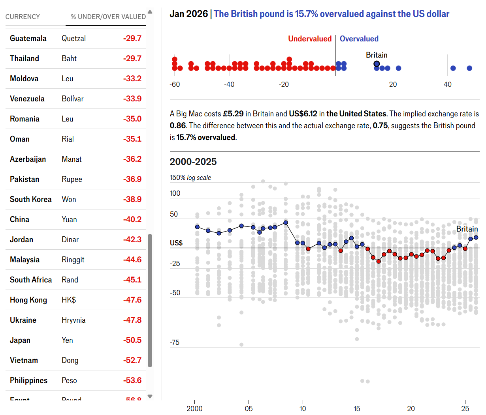

Redesign de Visualizações de Dados
Caso 1
Caso 2
Caso 3
Caso 1 — Global Big Mac Index
Visualização original

Design A
Design B
Caso 2 — A definir
Visualização original
Imagem original ainda não adicionada.
Design A
Design B
Caso 3 — A definir
Visualização original
Design A
Design B